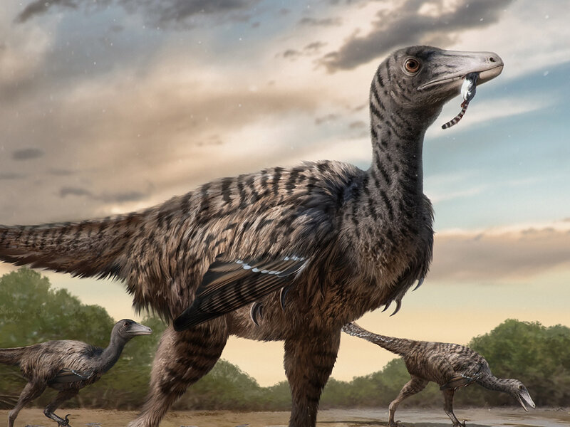
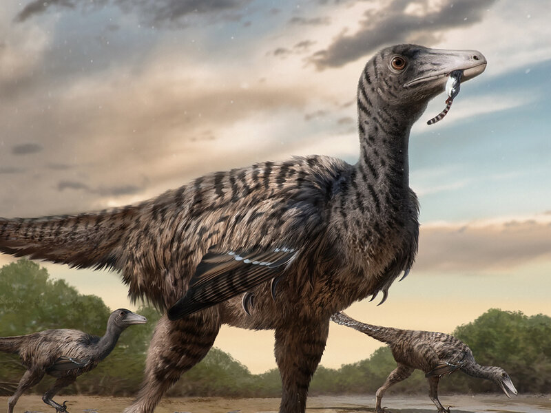

Velociraptor to jedna z najbardziej rozpoznawalnych i fascynujących grup dinozaurów mięsożernych, należąca do rodziny dromeozaurów. Żyły one w późnej kredzie, około 75-71 milionów lat temu, na terenach dzisiejszej Azji. Słyną z tego, że były sprawnymi drapieżnikami, zdolnymi do szybkich biegów i zwinnych manewrów, co czyniło je groźnymi łowcami. Nazwa "Velociraptor" wywodzi się z łacińskich słów oznaczających "szybki złodziej", co doskonale opisuje ich charakterystyczne cechy.
 Jedną z najbardziej charakterystycznych cech Velociraptora były jego duże, zakrzywione pazury na stopach. Te pazury, szczególnie na drugim palcu, były ostrzejsze niż u większości innych dinozaurów, co czyniło je skutecznymi narzędziami do polowań. Velociraptor prawdopodobnie używał swoich pazurów do rozszarpywania zdobyczy lub powalania ofiar, a także do obrony przed drapieżnikami lub rywalizacji między sobą.

Velociraptory były także niewielkimi dinozaurami, osiągającymi długość około 2 metrów i wysokość na poziomie bioder dorosłego człowieka. Ich niewielki rozmiar sprawiał, że były zwinnymi i szybkimi drapieżnikami, zdolnymi do błyskawicznego poruszania się wśród roślinności. Dzięki swojej zwinności i umiejętnościom łowieckim, Velociraptory mogły być skutecznymi drapieżnikami, polującymi zarówno na niewielkie ssaki, jak i inne małe dinozaury.
Jedną z najbardziej charakterystycznych cech Velociraptora były jego duże, zakrzywione pazury na stopach. Te pazury, szczególnie na drugim palcu, były ostrzejsze niż u większości innych dinozaurów, co czyniło je skutecznymi narzędziami do polowań. Velociraptor prawdopodobnie używał swoich pazurów do rozszarpywania zdobyczy lub powalania ofiar, a także do obrony przed drapieżnikami lub rywalizacji między sobą.

Velociraptory były także niewielkimi dinozaurami, osiągającymi długość około 2 metrów i wysokość na poziomie bioder dorosłego człowieka. Ich niewielki rozmiar sprawiał, że były zwinnymi i szybkimi drapieżnikami, zdolnymi do błyskawicznego poruszania się wśród roślinności. Dzięki swojej zwinności i umiejętnościom łowieckim, Velociraptory mogły być skutecznymi drapieżnikami, polującymi zarówno na niewielkie ssaki, jak i inne małe dinozaury.

Adres: Zwoleń Radosna 26-700
Kontakt: nr. 797 715 111
email: jurrasicpark@gmail.com
Godziny otwarcia